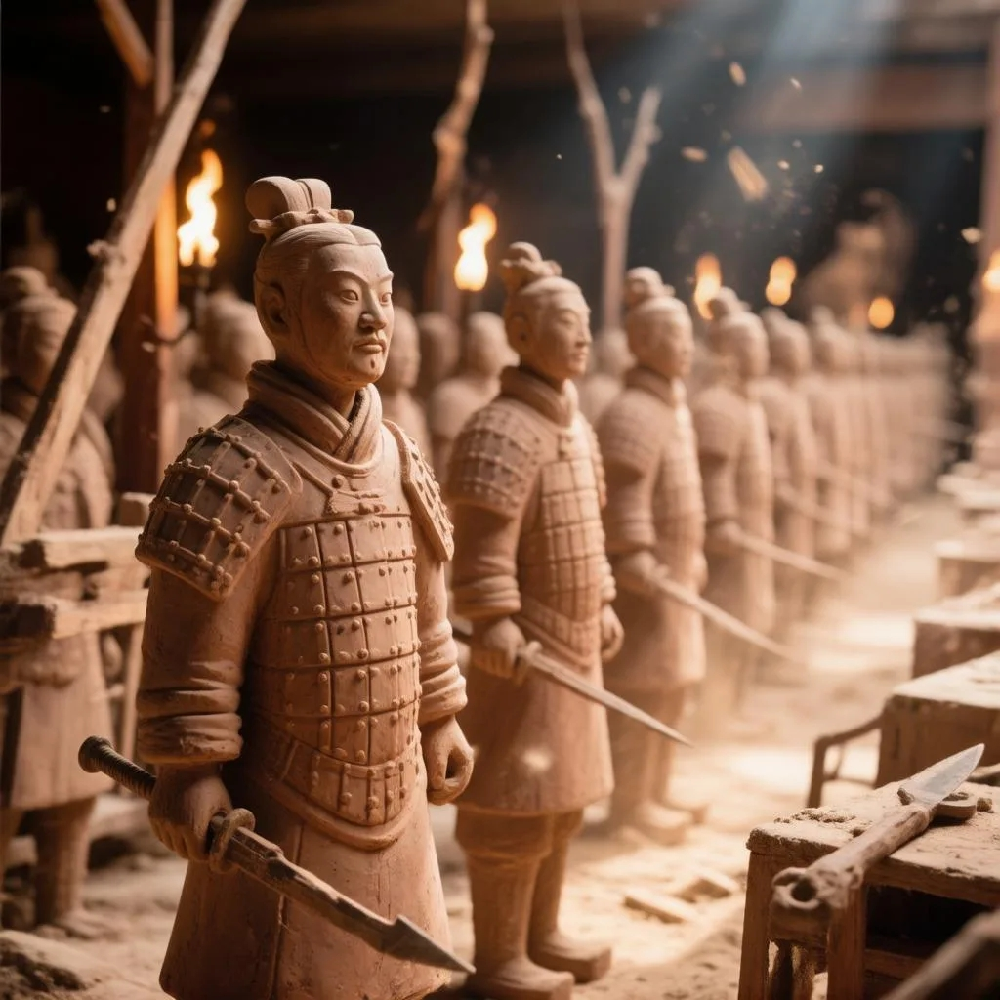
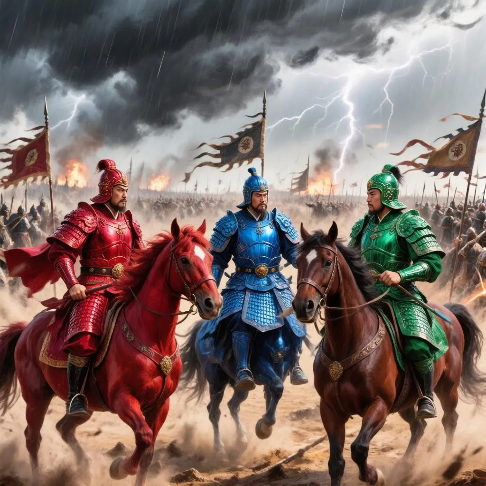
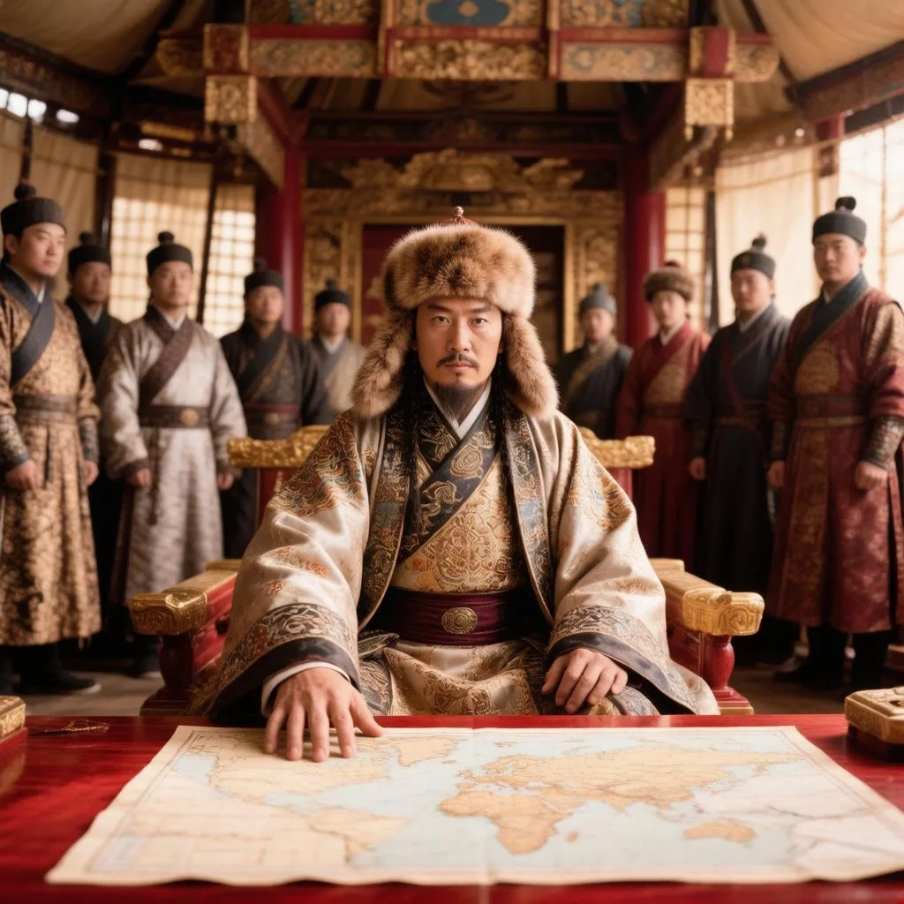
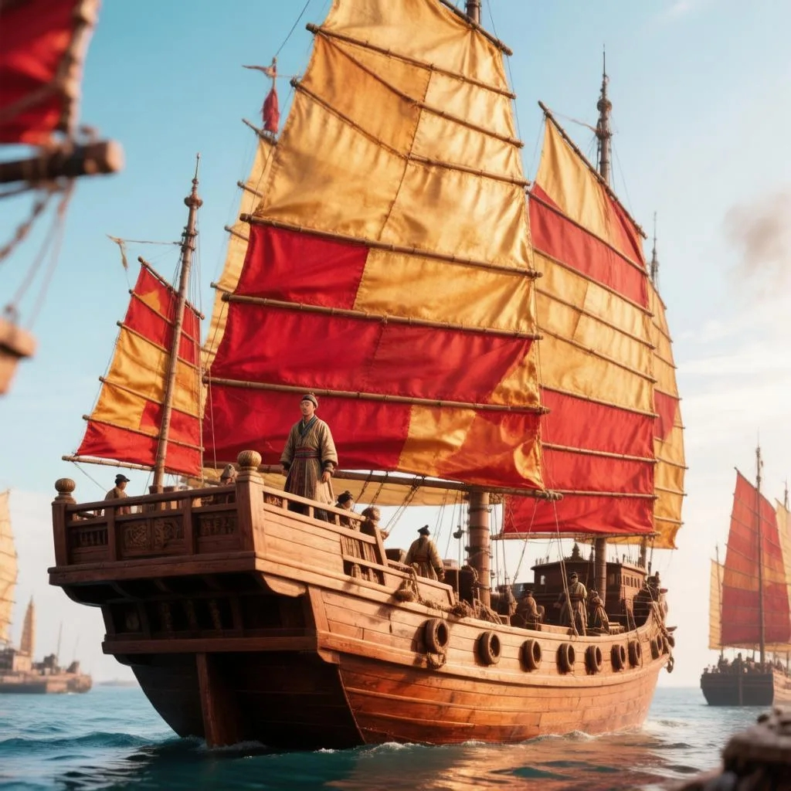

🏛️ Династия Хань: золотой век
Как Китай изобрёл бумагу, предсказывал землетрясения и отбирал чиновников по знаниям
🏹 Рождение империи
Когда Цинь Шихуанди умер, его жёсткая империя рухнула за четыре года. В последовавшей гражданской войне победил крестьянин Лю Бан, основавший новую династию — Хань (206 г. до н.э. — 220 г. н.э.). Его преемники правили Китаем более 400 лет — так долго, что название «хань» стало самоназванием китайского народа.
В отличие от Цинь, Хань не пыталась стереть прошлое. Императоры сохранили единую письменность и систему мер, но отменили самые жестокие законы. Они снизили налоги, поощряли торговлю и восстановили конфуцианские тексты, спрятанные учёными от сожжения. Именно при Хань конфуцианство стало государственной идеологией Китая на два тысячелетия.
📄 Изобретение бумаги
До Хань китайцы писали на бамбуковых дощечках (тяжёлых) или на шёлке (дорогом). В 105 году н.э. придворный евнух Цай Лунь предложил императору новый материал: смесь коры тутового дерева, пеньки, тряпок и рыболовных сетей, размельчённую и высушенную в тонкие листы. Так родилась бумага.
Изобретение произвело революцию. Книги стали доступнее, бюрократия — эффективнее, а знания — мобильнее. Из Китая технология медленно распространилась по Шёлковому пути: арабы узнали секрет в VIII веке, европейцы — только в XII.
🌍 Первый в мире сейсмограф
В 132 году н.э. учёный Чжан Хэн представил императорскому двору удивительное устройство: бронзовый сосуд диаметром около 1,8 метра с восемью драконами, каждый из которых держал во рту бронзовый шар. Под драконами сидели восемь жаб с открытыми пастями. Когда где-то происходило землетрясение, маятник внутри сосуда качался в нужную сторону, и шар выпадал из пасти дракона в рот жабы — указывая направление эпицентра.
Современники не поверили, пока однажды шар выпал без всяких ощутимых толчков. Через несколько дней прибыл гонец с известием: землетрясение произошло в сотнях километров от столицы. Это был первый в истории прибор для обнаружения и измерения землетрясений — за 1700 лет до европейских аналогов.
📝 Экзамены для чиновников
До Хань государственные должности раздавались по знатности и связям. Император У-ди ввёл систему, которая навсегда изменила Китай: теперь, чтобы стать чиновником, нужно было сдать экзамен. Проверяли знание конфуцианских текстов, законов, каллиграфии и умение составлять документы.
Это была первая в мире система отбора на государственную службу по способностям, а не по происхождению. Она просуществовала, совершенствуясь, до 1905 года — почти две тысячи лет. Бедный, но талантливый юноша мог подняться до высоких постов, и это давало империи постоянный приток способных управленцев.
🐪 Восстановление Шёлкового пути
После падения Цинь торговля с Западом остановилась. Император У-ди отправил посла Чжан Цяня на разведку — и тот вернулся с рассказами о богатых странах. Хань восстановила и расширила Шёлковый путь, установила контакты с Персией, Индией и даже отправила посольство в Рим (хотя оно так и не добралось).
По этим маршрутам в Китай пришёл буддизм, а на запад ушли китайские изобретения. Династия процветала, население росло, и в первые века нашей эры Китай сравнялся по могуществу с Римской империей — с той лишь разницей, что он пережил падение Рима и продолжил своё развитие.
📜 Наследие
Династия Хань дала Китаю нечто большее, чем отдельные изобретения. Она создала модель империи, которая просуществовала до XX века: централизованное государство с конфуцианской идеологией, образованной бюрократией и открытой торговлей. Сами китайцы до сих пор называют себя «ханьцами» — людьми Хань.
📚 Другие статьи серии



